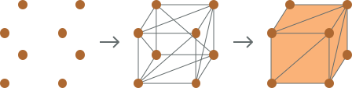

Co je Three.js
Vítejte v tutoriálu o JavaScript knihovně jménem Three.js. Tato knihovna slouží pro práci s 3D grafikou na webu. S její pomocí si můžeme například naprogramovat vlastní prohlížeč 3D modelů nebo třeba nějakou 3D hru. Možnosti jsou snad nekonečné a Three.js nám práci s 3D grafikou výrazně usnadňuje.
WebGL
Three.js pracuje s WebGL, což je JavaScript API pro renderování 3D (i 2D) grafiky. Díky WebGL je na webu možné renderovat 3D grafiku na canvas element. Protože je WebGL velmi nízkoúrovňové, tak benefituje z lepšího výkonu a máme nad vším větší kontrolu. Nevýhoda ale je, že práce s nativním WebGL je velmi těžká. Musíme být dobří na matematiku a nakreslení jednoho trojúhelníku na canvas zabere alespoň 100 řádků kódu. Proto existují knihovny jako je Three.js, které nám práci s 3D grafikou usnadňují. Three.js umožňuje na webu pracovat s 3D grafikou i lidem, kteří nejsou stejně jako já moc dobří na matematiku. I tak nám ale Three.js nechává přístup k WebGL. Pokud tedy chceme, tak můžeme občas sáhnout i po WebGL a vytvořit si třeba vlastní shadery. Později si to zkusíme.
Jak se 3D grafika vykresluje
Vykreslování 3D grafiky má na starosti GPU. Oproti CPU je o něco pomalejší, ale dokáže dělat tisíce věcí paralelně. Když používáme WebGL, tak většinu práce provádí hlavně GPU. 3D grafika se vykresluje tak, že se umístí body na 2D plochu, které se potom spojují a vytvářejí trojúhelníky. Nakonec GPU podle těchto trojúhelníku rozsvítí určité pixely. A protože dokáže dělat tisíce věcí paralelně, tak to udělá rychle.
Instrukce pro položení bodů a vykreslení pixelů jsou napsány v shaderech. Do těch předáváme informace jako je pozice bodů, transformace modelu, souřadnice kamery, a tak podobně. Věci se podle toho napozicují a obarví tak, jak je napsáno v shaderu. Psaní shaderů není nic jednoduchého, proto nám Three.js pár shaderů poskytuje a můžeme je jen použít. To nám často stačí, ale občas také potřebujeme něco specifického a psaní shaderů se nevyhneme. Proto si později zkusíme napsat i vlastní shadery a také rozšíříme shadery, které nám Three.js nabízí. Záleží na tom co děláme, někdy psaní shaderů moc složité ani být nemusí.
V této první části jste se dozvěděli co to Three.js je a že pracuje s WebGL. V příští části si Three.js trochu osaháme a vytvoříme si jednoduchou scénu s kostkou.